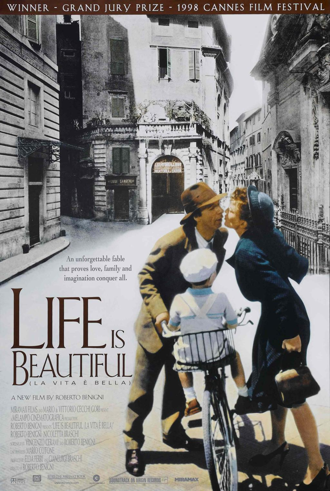
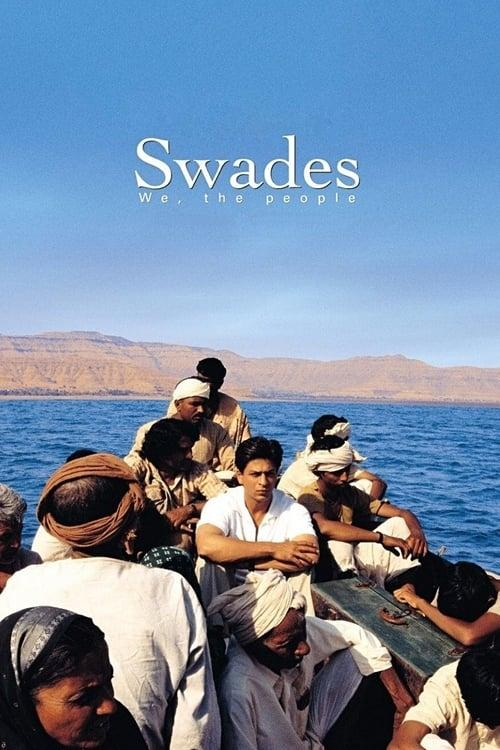
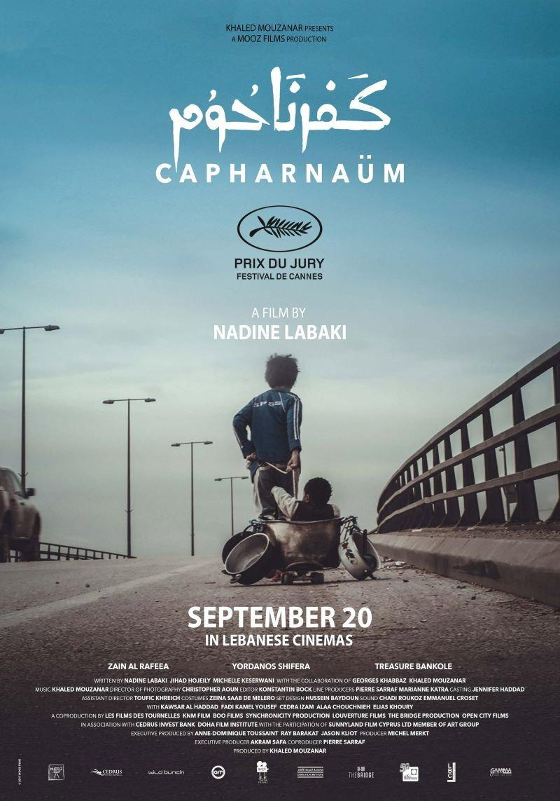
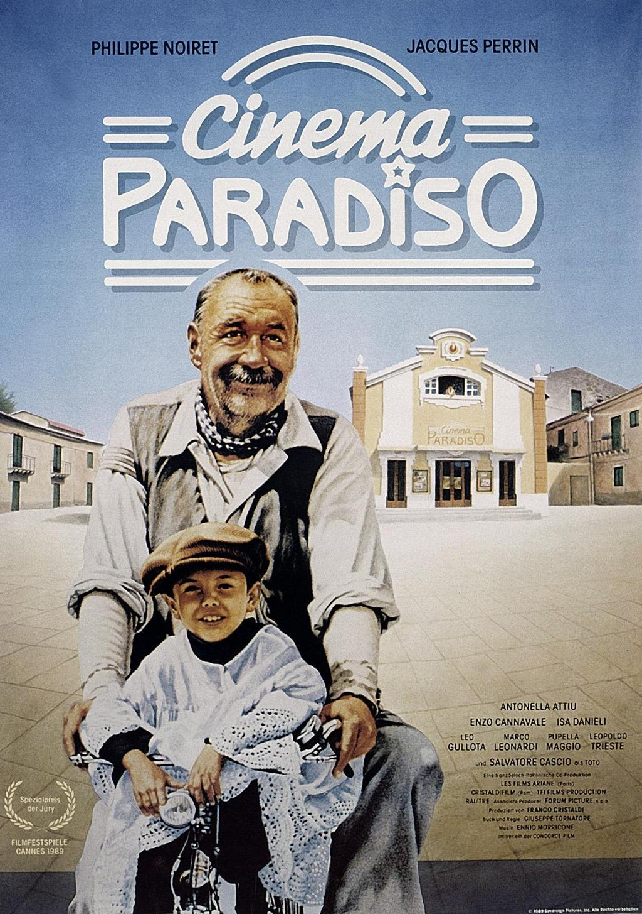
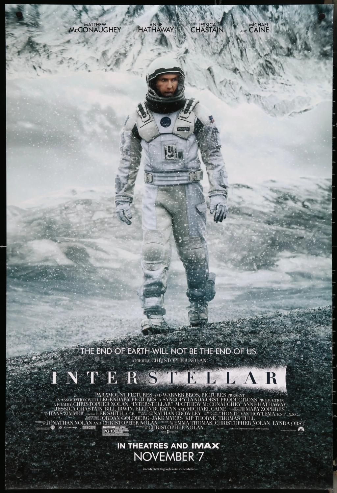

01
Life Is Beautiful
LA VITA È BELLA
A work in progress · Mumbai, India
A curious mind, a restless imagination, and a life that refuses to fit into one frame.
Not a finished story.
Just a frame from it.
I have always found it difficult to put life into neat little boxes. Maybe that's a good thing.
I believe in fantasy, but I respect practicality. I am curious about almost everything, even while knowing that one lifetime is nowhere near enough time to learn it all.
Cinema has always been more than entertainment to me. It is a language, a feeling, a place I keep returning to. I may be doing a white-collar job right now, but somewhere in my heart, the destination is still a film set.
Still figuring it out. Happily.
There is a practical side to every dream. Here's the part of my story that lives in the everyday world.
My professional experience has involved working in trust and safety operations, navigating policy, quality, and the human context behind decisions.
This is a high-level introduction. Add confirmed roles, employers, dates, and measurable achievements before using this as a formal CV.
Request my detailed profile ↗I began in front of a camera as a child, working mostly in the Bengali film and television world, along with European projects.
I don't have a neat archive of footage to show for those early years. But the experience is part of me all the same — an early introduction to sets, stories, and the strange magic of performance.
More credits and details will be added when I have the verified titles, roles, and production information together.
Stories that stayed. Scores that still make the world feel a little bigger. A small room for a very large obsession.

LA VITA È BELLA

ASHUTOSH GOWARIKER

NADINE LABAKI

Giuseppe Tornatore

CHRISTOPHER NOLAN
I tend to fall in love with film scores — the kind that make a scene live long after the screen goes dark. Press play when you're ready.
Hans Zimmer · Inception
Junkie XL · Mad Max: Fury Road
Hans Zimmer · Man of Steel
Amar Mohile · Chennai Express
Ennio Morricone · The Good, the Bad and the Ugly
Film titles are presented as a personal watchlist; official theatrical artwork can be added when suitable image assets are available.
Somewhere between a trail, a new skill, a long conversation, and a city I haven't reached yet.
Walking, running, trekking — I like the kind of journeys that ask you to keep going one step at a time.
There are too many things to learn and too little time. I intend to make a dent in that list anyway.
Three close friends, countless conversations, and the quiet joy of having your people around.
Cobblestone streets. Old architecture. A medieval atmosphere. A culture I want to get lost in — and, yes, a little Scottish whisky in the picture.
Maybe it doesn't fit the most practical version of my plans. That's probably why it belongs here.
Freedom. The freedom to do almost anything — and to share that joy, generously, with the people I love.
Every good story leaves room for another character.
For work, films, creative collaborations, conversations, or simply to say hello.
sayansarkar60@gmail.com ↗Find me on LinkedIn ↗